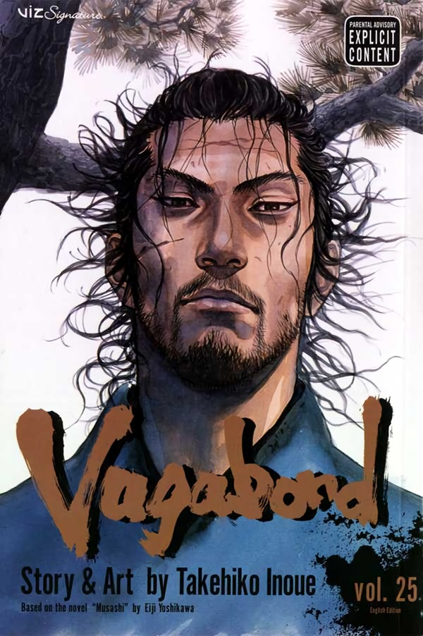

Vagabond
Takehiko Inoue
Manga
Completed
9/10
Log what you read, save what hit you, write what it meant to you. Because the same story speaks differently to every person who lives it.
For readers, watchers, and anyone who remembers stories by how they felt.
A number can show how much you liked something. Inkwell helps you remember why.

Takehiko Inoue
Search any story you are reading or watching. Add it to your library, then choose where it belongs.
Start your libraryType a title to find it and add it to your library.
Creator
Manga
Filter your collection, update progress, and add your own rating.
Creator
Two readers can pass through the same story and carry away completely different pieces of it.
Hajime Isayama
Switch layers or focus either reader while keeping the shared story visible.
Confirm that Supabase is loaded and that the manga table contains valid rows and cover files.
Attack on Titan begins as a story about humanity attempting to escape physical imprisonment. The people inside the Walls believe freedom exists somewhere beyond them, while the Titans appear to be the monsters preventing humanity from reaching it. As the story develops, however, the conflict becomes much more complicated. The Walls are not humanity’s only prison, and the Titans are not entirely separate from the people they consume.
The series gradually reveals that people can also be imprisoned by history, fear, inherited hatred, political systems, memories, relationships, desires, and even their own ideas of freedom.
The tragedy of Eren Yeager is not simply that he fails to become free. It is that he spends his entire life pursuing freedom while becoming increasingly enslaved by his own narrow image of it.
The Titans can be interpreted as physical representations of humanity’s repressed and destructive instincts what Carl Jung called the Shadow. The Shadow contains the parts of human nature that individuals and societies refuse to recognize within themselves, including aggression, selfishness, fear, domination, and the capacity for violence.
The Titans resemble human beings, but their bodies are distorted and their behavior appears to lack reason, morality, and compassion. They consume people despite having no ordinary need for food. Their violence appears empty and instinctive.
The Titans are therefore not simply external monsters. They represent human nature stripped of consciousness, responsibility, empathy, and restraint.
Their behavior can also be connected metaphorically to Paul MacLean’s theory of the “reptilian brain,” which he associated with the basal ganglia and the most primitive parts of human behavior. Within this theory, the reptilian brain represents primal instincts such as aggression, dominance, territoriality, and the basic drive to survive.
The Titans can therefore be understood as physical manifestations of these primitive instincts. They are driven by destructive urges and appear to lack reason, morality, and civilization. In this way, they represent humanity’s inherent capacity for violence and destruction the darker side of the mind represented by Jung’s Shadow.
The Titans’ physical weakness strengthens this interpretation. A Titan can be killed only by striking the nape of its neck. This area corresponds roughly to the base of the brain and the brainstem, which connects with the spinal cord.
Symbolically, defeating a Titan requires striking the center of its primitive existence. Humanity must confront and overcome its own darkest instincts.
The later revelation that Titans were once human beings completes this symbolism. The monsters outside the Walls were never entirely separate from humanity. The real horror is that people can be transformed into the very creatures they fear.
Humanity’s greatest enemy is therefore not only the Titan standing outside the Wall. It is also the aggression, fear, prejudice, and desire for domination hidden within humanity itself.
Grisha hides his books and knowledge deep inside the basement. What is hidden there is not merely information about the outside world; it is the truth about humanity, history, Marley, Eldia, and the false reality in which the people inside the Walls have been living.
The basement can therefore be understood as another representation of the unconscious. Like Jung’s Shadow, the truth is buried beneath the surface because it is frightening and difficult to accept. However, what remains hidden still controls people’s lives.
When we begin to understand darkness, it may appear like the night: filled with black shadows, but also with countless shimmering stars. Only those who refuse to understand darkness must remain completely afraid of it. Confronting darkness does not mean surrendering to evil. It means recognizing that darkness is part of ourselves and of the world.
Knowledge offers liberation, but it also introduces responsibility, suffering, and conflict. Before reaching the basement, the Scouts can imagine that killing the Titans will solve humanity’s problems. After discovering the truth, they learn about foreign nations, propaganda, racial hatred, inherited guilt, and centuries of violence.
They cannot return to their former innocence.
Their world becomes larger, but it also becomes far more painful. The truth sets them free from ignorance while imprisoning them within new moral consequences.
This reveals one of the darker contradictions of freedom: one person’s freedom can become another person’s slavery.
The people of Paradis want freedom from Marley. Marley claims it must protect itself from the Subjects of Ymir. Different groups justify oppression by describing it as protection, survival, justice, or liberation.
Knowledge therefore reveals that freedom is never isolated. The choices made by one person or nation affect the freedom of everyone around them.
The beauty of freedom is that human beings possess the ability to make their own decisions. Its cruelty is that they must often decide without knowing what their choices will cause.
Levi expresses this uncertainty when Eren must decide whether to transform and fight the Female Titan himself or trust the members of the Survey Corps. Levi admits that he does not know which choice is correct and advises Eren to “choose whatever you’ll regret the least.” The scene appears in Chapter 25, “Bite.”
Levi does not tell Eren that one option is objectively perfect. Trusting his own strength may create disaster, but trusting his comrades may also lead to their deaths. Experience cannot eliminate uncertainty.
The importance of a decision therefore does not come from knowing that it is correct. It comes from choosing despite uncertainty and accepting responsibility for the result.
This is both the beauty and cruelty of freedom. Eren has the right to choose, but he is not free from grief, regret, or consequences.
A selfish decision is also not automatically productive or destructive. Its meaning is often determined by an outcome that nobody can fully predict. Knowledge and selfishness can both become forms of liberation: knowledge allows a person to see beyond a reality created for them, while selfishness allows them to act according to their own will rather than simply obeying others.
Yet either one can become destructive when treated as an absolute truth. Knowledge can become arrogance, while personal freedom can become permission to destroy the freedom of others.
Freedom is not the absence of consequences. It is the willingness to choose while knowing that consequences will follow.
Eren’s story demonstrates the danger of separating freedom from responsibility. He claims the right to determine his own future, but his choice removes that same right from millions of other people.
His freedom becomes domination because it refuses to recognize the freedom of anyone standing in its way.
Kenny reaches a similar conclusion near the end of his life. Reflecting on everyone he has known, he recognizes that people need something to keep moving forward. They may depend on pleasure, religion, family, rulers, dreams, children, or power.
As Kenny explains, “Everyone had to be drunk on somethin’ to keep pushing on,” because everyone was ultimately enslaved by something. His speech occurs in Season 3, Episode 10, “Friends.”
Kenny does not necessarily mean that every desire is evil. Dreams, relationships, faith, and ambition can give people the strength to continue living. The danger appears when someone becomes incapable of existing without the object of that desire.
The object itself is not always the chain. The chain is the person’s inability to release it.
A dream can guide someone, but when that dream becomes more valuable than every human life, it becomes a master. Love can protect someone, but when love demands obedience and self-erasure, it becomes captivity. Knowledge can free someone from ignorance, but it can also trap them inside the belief that they understand everything.
People may free themselves from one master only to become servants of another.
Kenny wants the Founding Titan’s power because he hopes it will allow him to understand Uri’s compassion. Zeke becomes controlled by his desire to end suffering. Ymir remains enslaved by her attachment to King Fritz. Mikasa fears losing the person who became the center of her emotional world.
Eren becomes enslaved by freedom itself.
This is especially important in a story centered on the desire to obtain freedom. Attack on Titan gradually suggests that freedom cannot be easily defined, possessed, or permanently achieved. Every attempt to secure absolute freedom produces new restrictions. Every victory opens the way to another conflict.
Eren escapes the Walls, the Titans, the monarchy, and Marley’s attempts to destroy Paradis. Nevertheless, he becomes increasingly enslaved by his childhood image of freedom.
He destroys his external chains while remaining controlled by an internal one.
True freedom may not mean escaping every limitation. Such freedom may be impossible. Human beings are limited by their bodies, histories, responsibilities, relationships, and mortality.
Freedom may instead mean learning how to remain internally free while living within unavoidable limitations. Before external freedom can have any meaning, a person must develop a form of inner freedom.
A person can possess extraordinary external power while remaining psychologically imprisoned. Eren eventually gains the power to reshape the world, yet his mind remains trapped inside the desire that controlled him as a child.
Armin possesses far less physical power, but he can recognize beauty, meaning, and possibility within an imperfect world.
Loss is an important part of this process. When everything familiar has been taken away, the individual is forced to confront what remains. In losing certainty, identity, or attachment, a person may discover that they are capable of choosing a new direction.
However, this does not mean people should deliberately destroy everything they value. It means freedom requires the ability to release what can no longer be held.
A person who cannot sacrifice anything may be unable to create meaningful change. At the same time, a person who sacrifices everything may discover that there is nothing left for their freedom to protect.
Freedom therefore requires judgment. It requires understanding what should be preserved, what must be changed, and what must finally be released.
Eren, Mikasa, and Armin represent different relationships with time and freedom.
Eren is constantly focused on what lies ahead. He looks toward the horizon, searching for the next barrier that must be crossed or destroyed.
Mikasa is deeply connected to what has already been lost. Her identity is shaped by memory, grief, home, and her desire to preserve her connection with Eren.
Armin, however, repeatedly draws attention to what exists in the present.
This contrast is expressed beautifully in the scene at the sea. While Eren stares into the distance, Armin notices and picks up a seashell. Eren sees another boundary and another enemy. Armin sees the wonder already beneath his feet.
The object Eren has spent his life pursuing is finally present, but his obsession prevents him from experiencing it. He has reached the sea, yet he remains hopeless.
Eren explains that he once believed freedom existed on the other side of the sea. After learning the truth, however, he points toward the distant world and asks:
“If we kill all our enemies over there… will we finally be free?”
The question closes Season 3, Episode 22, “The Other Side of the Wall.”
Eren’s question reveals how his understanding of freedom has changed. As a child, he believed reaching the world beyond the Walls would make him free. Once he reaches it, freedom immediately moves somewhere else.
The sea should represent the completion of Eren’s dream, but he transforms it into another boundary. Armin experiences the sea. Eren looks beyond it.
Armin sees beauty. Eren sees the people who must be removed before freedom can begin.
Because Eren is entirely focused on his idea of freedom, he fails to recognize the freedom and beauty already surrounding him. His obsession prevents him from seeing the complete picture.
His tragedy is not merely that he cannot reach freedom. Moments of freedom exist throughout his life, but he cannot recognize them because they do not match the absolute freedom he imagined.
This idea resembles the Zen understanding of freedom. We may believe that we are free, yet most of us remain bound by ideas, beliefs, fears, prejudices, concepts, and intellectual explanations. These mental structures can imprison us more subtly than physical walls or steel bars.
People often approach freedom in ways that bind them even more tightly. We run toward it with urgent desire while possessing only a vague idea of what it actually is. We imagine freedom as an achievement that must be gained, earned, developed, or acquired.
However, freedom may not be something we can successfully pursue as an external object. It may already belong to us from the beginning.
We fail to recognize this because we continually place new chains upon ourselves. We divide reality into categories, become trapped inside our thoughts, and separate ourselves from the present moment. We convince ourselves that something is missing and that we must fill this absence before we can finally be free.
As long as we treat freedom as an object that we must obtain, we remain controlled by the idea of freedom.
Freedom may therefore be less about gaining something and more about letting something go. It requires us to recognize how quickly we are deceived by our own interpretations of reality. We become absorbed in our fears, expectations, ambitions, and prejudices, forgetting that life is happening here and now.
The great paradox is that, to become free, we may have to sacrifice our fixed idea of freedom.
The conversation between Armin and Zeke directly challenges the nihilism surrounding the Rumbling.
Zeke describes life through a bleak biological perspective. Life survives by reproducing, avoiding extinction, and continuing itself through future generations. Organisms fear death because death threatens life’s ability to multiply.
Zeke connects this desire for survival to Ymir. He believes that her fear of death contributed to the creation of the Paths, a realm in which her existence continued beyond ordinary death.
However, Zeke questions whether survival and reproduction give life genuine meaning. If people are born only to survive, multiply, suffer, and die, then existence appears to be an empty cycle.
This belief explains his euthanasia plan. Zeke concludes that preventing future births would also prevent future suffering. In his mind, nonexistence is more merciful than allowing the cycle of persecution and pain to continue.
Armin does not defeat Zeke’s argument with a larger biological or political theory. Instead, he remembers an ordinary childhood experience.
He recalls running toward a tree with Eren and Mikasa as the sun was setting. He was slower than both of them, but the breeze felt good, and the experience made him happy. Armin remembers thinking that perhaps he had been born simply to race his friends up that hill.
He also remembers reading inside while rain fell, feeding a squirrel, and walking through a market. These experiences did not help him defeat an enemy, reproduce, or guarantee his survival. They were historically insignificant.
Nevertheless, they were precious.
In the final special, Armin describes these apparently insignificant experiences as the moments that made him feel his life possessed value.
This is Armin’s answer to Zeke.
Life does not require one universal purpose to be worth living. Meaning can exist within experiences that are temporary, ordinary, and apparently useless.
Armin’s argument is also an argument about freedom. He does not postpone the value of life until a perfect future arrives. He finds value in the experiences that already exist.
Zeke and Eren both become trapped by grand solutions. Zeke wants to end suffering by preventing life. Eren wants to secure freedom by destroying his enemies. Armin rejects the assumption that life must be justified by one enormous achievement.
Sometimes being alive is justified by a moment that appears to accomplish nothing.
Armin finds a dried leaf buried in the sand of the Paths. To him, it represents his childhood memories and the small experiences he values.
When Zeke looks at it, however, he sees a baseball.
The object changes according to the memory of the person observing it. For Armin, it represents running with his friends. For Zeke, it becomes the ball he used while playing catch with Tom Ksaver.
Playing catch did not help Zeke survive or reproduce. It did not complete his political mission or eliminate suffering. However, it was one of the few experiences in which he felt genuinely connected to another person.
He realizes that simply playing catch with Ksaver might have been enough.
This realization does not prove suffering is unreal. It proves suffering is not the only reality.
Zeke spent his life searching for a grand solution to existence. He believed he needed to solve the suffering of an entire people. Armin reminds him that meaning can exist in a single shared experience.
The leaf and the baseball represent the same truth: people experience freedom when they recognize the value of being alive in the present.
The infant raised above the crowd during the Rumbling visually expresses the same argument.
As people are pushed toward a cliff by the advancing Titans, they pass the child forward and raise it above themselves. The adults know they may not survive, but they still attempt to protect someone who has only just entered the world.
The baby has not accomplished anything. It possesses no political authority, military power, special intelligence, or historical importance.
The people protect it simply because it is alive.
This recalls Carla holding the infant Eren and insisting that a person does not need to accomplish something extraordinary to possess value. A child is already special because it has been born into the world.
The baby also connects directly to Armin and Zeke’s conversation.
From Zeke’s biological perspective, the infant represents the continuation of life. The crowd attempts to preserve the next generation even when its own survival appears impossible.
From Armin’s perspective, however, the baby represents more than reproduction. It represents the possibility of future experiences: relationships, games, discoveries, books, meals, conversations, and ordinary moments that have not yet occurred.
The people do not protect the baby because they have calculated its future usefulness. They act because they believe its life matters.
The baby raised above the crowd creates a direct contrast with Eren’s child form above the clouds.
One child is protected because human life possesses unconditional value. The other child imagines that freedom requires the destruction of nearly every life beneath him.
During the Rumbling, Eren appears in the sky as his younger self. He raises his arms and experiences the open world as freedom.
The scene deliberately separates Eren’s perception from reality. The child sees clouds, open space, and a world without boundaries. The audience understands that countless people are being killed beneath him.
Eren’s child form represents his arrested emotional state. Although his body has grown older and he has gained almost unlimited power, the desire guiding him remains the desire of the child who stared beyond the Walls.
That child understood the world through simple oppositions: freedom or captivity, victory or defeat, friend or enemy, killing or being killed.
This understanding was partly reasonable when Eren was a powerless child surrounded by Titans. It becomes catastrophic when someone possessing the Founder’s power continues to understand the world through the same categories.
Eren’s idea of freedom never fully matures.
He does not simply want the people of Paradis to be safe. He wants to reach the empty, unrestricted landscapes he imagined after reading Armin’s book.
The existence of other human beings beyond the Walls complicates that image. They transform the outside world from an empty symbol of freedom into a real place filled with people, histories, relationships, and competing desires.
The sky scene can therefore be interpreted as a psychological escape. Eren retreats into his childhood imagination because fully confronting what is happening beneath him would destroy the fantasy that his actions represent freedom.
The child can celebrate only because he refuses to look downward.
Eren’s encounter with Ramzi reveals the conflict between his compassion and his destructive desire.
When Eren sees Ramzi being attacked, he initially tries to walk away. He knows that saving the boy appears meaningless because Ramzi will later die during the Rumbling.
Nevertheless, Eren turns back and saves him.
This demonstrates that Eren has not completely lost his compassion. Even while knowing what he intends to do, he cannot ignore the suffering directly in front of him.
The scene also reveals a contradiction. Eren can recognize the value of an individual life when that person is standing before him, but he still moves toward a future in which that life will be destroyed.
He saves Ramzi because his compassion remains real. He later kills him because his larger idea of freedom becomes stronger than that compassion.
Eren eventually breaks down in front of Ramzi and repeatedly apologizes. Ramzi cannot understand him, but Eren confesses because his guilt has become unbearable.
He admits that the Rumbling is not motivated only by the protection of Paradis.
When Eren discovered that humanity still existed beyond the Walls, he was disappointed. The real world did not resemble the empty landscapes he had imagined. His childhood dream of freedom was based on the belief that the world outside belonged to no one.
The existence of other people transformed his imagined freedom into another boundary.
Part of Eren wanted to erase that contradiction. He wanted reality to resemble the world he had imagined as a child. His rescue of Ramzi, apology, disappointment, and desire to wipe the outside world away are presented together in The Final Chapters Special 1.
Eren’s apology proves that he understands the human cost. His decision to continue proves that understanding alone is not enough to change him.
Eren did not move toward the Rumbling because he possessed perfect knowledge that no other future could exist. His future memories were incomplete, and several of his actions suggest that he continued testing whether events could unfold differently.
Saving Ramzi is one example. Eren attempts to leave him but finds himself unable to do so. The rescue confirms that Eren’s compassion still shapes his choices, even when he believes the final outcome cannot change.
Eren also asks Mikasa what he means to her. The question can be interpreted as another attempt to test whether the future might change. A different answer may have offered him another emotional path.
The cabin vision later demonstrates that Eren can imagine a life in which he and Mikasa abandon the conflict and live together peacefully.
However, Eren cannot accept that life as a complete solution. Choosing it would mean abandoning Armin, Paradis, and everyone else to face the war without him.
Personal peace is imaginable, but he cannot recognize it as valid freedom.
His time in Marley provides another possible path. Eren lives among the people he has been taught to regard as enemies. He eats with them, sleeps near them, speaks with them, and recognizes that they are ordinary human beings rather than monsters.
This experience gives him evidence that the world is more complicated than the division between enemies and allies that shaped his childhood.
Yet Eren cannot transform that recognition into a different future.
The problem is therefore not that Eren sees no alternatives. He sees possibilities, but he cannot accept them as valid. Each alternative requires him to surrender something he believes he must protect: Paradis, his friends, his dream, his certainty, or his fixed image of freedom.
He does not fail to imagine other lives.
He fails to recognize them as freedom.
After touching Historia’s hand, Eren receives fragments of future events through Grisha’s memories. He does not gain perfect knowledge of every detail. He knows particular images and outcomes but remains uncertain about how they will happen and what lies between them.
Zeke explicitly recognizes that Eren did not see everything, while Grisha’s experiences reveal that Eren could selectively transmit memories rather than provide a complete view of the future.
This explains why Eren continues testing reality.
His reaction to Sasha’s death suggests a terrible confirmation. A remembered event has occurred, but knowing it would happen does not remove the pain.
Every event that matches his memories makes the future appear more inevitable.
However, inevitability and desire become intertwined.
Eren follows the future partly because he believes it cannot be changed, but also because the Rumbling fulfills something within him. It removes the world that disappointed him and creates the empty landscape he imagined as a child.
Eren is therefore neither completely free nor completely controlled.
Future memories, inherited violence, political circumstances, trauma, the Attack Titan, and personal desire all influence him. Yet none of these forces completely erase his responsibility.
The future he sees is also a future produced by choices consistent with his character.
Eren searches for another outcome, but he cannot commit himself to an alternative that contradicts his deepest desire. The future becomes inevitable partly because the person who sees it repeatedly chooses the path leading toward it.
The cabin sequence represents another possible life for Eren and Mikasa.
Within the Paths-created vision, they abandon the conflict and live together in isolation until Eren’s remaining time ends. The scene is best understood as an imagined possibility and farewell rather than a straightforward second timeline.
It represents the private life they might have chosen if they had abandoned everyone else.
The cabin proves that Eren can imagine personal peace.
What he cannot imagine is a peaceful solution to the larger conflict that does not require abandoning Paradis or surrendering his fixed idea of freedom.
Eren asks Mikasa to forget him and throw away the scarf after his death. He appears to be attempting to release her from her attachment to him.
However, Mikasa does not simply obey his request. She chooses how she will remember him for herself. In the final battle, she reties the scarf and rejects the demand that she erase him from her life.
This is important because freedom does not require erasing the past. It requires preventing the past from controlling every future decision.
Near the end, Eren does not describe himself as a perfect mastermind or divine savior. He recognizes himself as an ordinary and foolish person who obtained too much power.
This confession matters because Eren was never uniquely gifted in the same ways as many of the people around him.
Armin possesses exceptional intelligence, curiosity, and imagination. Erwin possesses extraordinary leadership. Levi possesses unmatched combat ability. Mikasa is a naturally gifted fighter.
Eren’s defining quality is his overwhelming determination to continue moving forward.
That determination can be admirable when directed against oppression. However, determination without reflection becomes dangerous. Once Eren gains almost unlimited power, his narrow understanding of freedom becomes capable of reshaping the world.
This is what makes him tragic rather than simply inhuman.
Eren is not a distant god or supernatural embodiment of evil. He is an angry, frightened, emotionally wounded human being whose unresolved desires are magnified by extraordinary power.
The story repeatedly resists dividing people permanently into gods, demons, heroes, or monsters. Beneath those labels are human beings shaped by fear, love, history, selfishness, desire, and limited understanding.
Recognizing Eren’s humanity does not excuse his actions. It makes those actions more disturbing.
The Rumbling is not carried out by an unknowable monster. It is carried out by a human being whose idea of freedom becomes more valuable to him than the lives standing in its way.
Ymir’s story presents another form of psychological enslavement.
As a child, her village is conquered and she is made into a slave. She is deprived of identity and treated as though her life possesses no value beyond what she can provide to others.
Despite this cruelty, Ymir appears to desire affection and human connection. Her observation of a couple suggests that she longs to experience a similar bond.
However, because she has never experienced healthy affection, she comes to associate love with usefulness, obedience, and sacrifice.
After obtaining the power of the Titans, Ymir could theoretically resist King Fritz. Instead, she returns to him and uses her power to cultivate land, construct roads, defeat his enemies, expand his empire, and bear his children.
King Fritz gives her attention only when she is useful to him. Ymir may therefore interpret usefulness as the only way she can earn affection.
Her attachment is better understood as a trauma bond than as healthy love. Fear, dependency, abuse, and the hope of receiving affection become inseparable.
Her love does not free her. It requires her to surrender herself completely.
Ymir possesses greater physical power than the king, yet she remains psychologically unable to oppose him. Her story demonstrates that external power does not automatically create inner freedom. Her enslavement, service to Fritz, sacrifice, and continued labor in the Paths are depicted in “From You, 2,000 Years Ago.”
Ymir eventually throws herself in front of a spear intended for King Fritz.
This is the ultimate expression of the relationship she has learned to accept. She sacrifices her life to protect the person whose recognition she has spent years attempting to earn.
However, the king does not respond with affection, grief, or gratitude. He orders her to rise and continue serving him.
His reaction confirms that he never viewed her as an equal human being. He viewed her as a weapon and a means of expanding his power.
Ymir loses the will to continue living.
Yet death does not free her. She awakens in the Paths, where she continues building Titans and obeying the royal bloodline for approximately two thousand years.
Her physical slavery has ended, but her psychological slavery continues.
King Fritz is no longer physically present in the Paths. His authority survives inside Ymir’s understanding of herself.
This connects directly to Kenny’s belief that everyone is enslaved by something. Ymir possesses almost unlimited power but remains controlled by her longing for connection and her inability to separate love from submission.
When Eren reaches Ymir in the Paths, Zeke expects her to obey him because he possesses royal blood. Like the members of the royal family before him, he approaches her as a tool whose purpose is to follow commands.
Eren responds differently.
He embraces Ymir and recognizes her as a human being with the right to choose. He rejects the identities imposed upon her: goddess, devil, slave, ancestor, and weapon.
Ymir begins to cry.
Her tears represent the return of the humanity that centuries of obedience had suppressed. Someone has finally acknowledged her pain, personhood, and agency. The embrace, Eren’s recognition of her choice, and Ymir’s tears occur immediately before she gives Eren access to the Founder and begins the Rumbling.
The scene also parallels Armin’s final embrace with Eren. Eren reaches the frightened child hidden within Ymir, while Armin later reaches the frightened child still existing within Eren.
However, Eren does not completely free Ymir.
He awakens her will and gives her the opportunity to choose, but the first choice she makes is to support the Rumbling. He releases her from automatic obedience to royal blood without resolving the emotional attachment that has imprisoned her for two thousand years.
Having the ability to choose is not always the same as being psychologically free.
Mikasa ultimately shows Ymir how to release the attachment itself.
Mikasa faces a conflict that resembles Ymir’s situation.
She loves Eren deeply, and much of her identity has been shaped by her desire to remain beside him. However, Eren has become responsible for the Rumbling and the deaths of countless people.
Mikasa must decide whether loving Eren means continuing to protect him regardless of what he does.
Her final decision proves that love does not require obedience.
Mikasa kills Eren and stops the Rumbling even though doing so causes her immense emotional pain. She does not act because her love has disappeared. She acts despite the fact that it remains.
This distinction is essential.
Ymir believed that loving King Fritz required endless service, sacrifice, and submission. Mikasa demonstrates that a person can love someone while still refusing to support the suffering that person causes.
Afterward, Mikasa kisses Eren in farewell.
The kiss combines love, grief, separation, and freedom. It does not undo her decision or transform it into submission. She has already chosen to oppose Eren and end the destruction.
The kiss acknowledges that her feelings remain even though she has refused to allow those feelings to control her moral judgment.
Ymir witnesses Mikasa’s choice. Through Mikasa, she sees someone accomplish what she could not do with King Fritz: reject the destructive power of the person she loves instead of sacrificing herself endlessly for him.
Mikasa demonstrates that love and obedience are not the same thing.
Eren gives Ymir permission to choose. Mikasa demonstrates what choosing freedom can require.
The ending connects Mikasa’s choice with the disappearance of Titan power and later shows Ymir imagining a life in which she did not sacrifice herself for Fritz.
Armin and Eren’s final conversation brings together guilt, friendship, responsibility, and the possibility of understanding someone without approving of what they have done.
Armin confronts Eren about the Rumbling. He does not treat worldwide destruction as morally acceptable. At the same time, he refuses to reduce Eren to nothing more than a monster.
Their final embrace recognizes that the frightened child and former friend still exist beneath Eren’s actions.
Understanding is not the same as forgiveness.
Armin can condemn what Eren has done while still grieving for him. His compassion does not erase Eren’s responsibility. Instead, it prevents moral judgment from becoming another form of dehumanization.
Their conversation also emphasizes the difference between them.
Eren searches for meaning through one enormous act that transforms history. Armin finds meaning in relationships and experiences that may never appear important to history.
Eren wants freedom to be absolute. Armin understands that life can remain meaningful even when freedom is incomplete.
Eren’s relationship with future memories can also support a metafictional interpretation.
He sees fragments of an ending and repeatedly moves toward them, even while testing whether events can unfold differently. His knowledge does not give him complete control. Instead, it limits his imagination by making one conclusion appear increasingly inevitable.
In this sense, Eren resembles a storyteller who knows the destination of a narrative but continues exploring different paths toward it.
This should not be treated as a literal statement about the author’s personal intentions. It is a thematic comparison.
Eren may be trapped not because every alternative is physically impossible, but because he cannot imagine or accept a future that contradicts the ending already formed within his mind.
Fate and personality become inseparable. The future occurs because Eren has seen it, but it also occurs because that future is consistent with the person Eren has become.
Armin represents true freedom more clearly than anyone else.
His strength does not come from physical power or an obsessive desire to destroy every obstacle. It comes from curiosity, wonder, imagination, and the willingness to value the present.
Carla expresses a related idea when she holds the infant Eren and insists that a person does not have to accomplish something extraordinary to possess value.
A human life is already meaningful simply because it has entered the world.
This challenges Eren’s belief that freedom must be earned through endless struggle. Freedom does not exist only beyond the Walls, across the sea, or after the destruction of every enemy.
It also exists in relationships, small discoveries, ordinary experiences, and the ability to recognize the value of being alive.
Armin discovers freedom in a seashell, a book, a race toward a tree, a rainy afternoon, a market, and a shared memory. Zeke briefly rediscovers it in a game of catch. Mikasa discovers it in the ability to love without obeying. Ymir discovers it by releasing the attachment that kept her enslaved. The people beneath the Rumbling express it by protecting an infant even when almost everything else has been taken from them.
Eren continually places freedom somewhere in the future.
At first, it is beyond the Walls. Then it is at the sea. Then it is beyond the sea. Then it requires defeating Marley. Finally, it appears to require the destruction of nearly everyone outside Paradis.
Every horizon reveals another horizon. Every victory creates another enemy.
Because Eren always places freedom somewhere else, the present becomes only another obstacle.
Armin possesses the freedom Eren continually overlooks. Armin is not physically freer than Eren. He remains limited by war, grief, responsibility, and mortality.
However, he possesses the inner freedom to recognize beauty without first demanding that the entire world conform to his desires.
Eren gains almost unlimited external power but remains internally imprisoned.
Eren’s tragedy is that he spends his entire life searching for freedom while becoming increasingly enslaved by his own image of it.
He reaches the sea, crosses into Marley, gains the power of the Founder, defeats his enemies, and sees the world flattened beneath him. Nevertheless, he never discovers the inner freedom that Armin repeatedly demonstrates.
Eren’s child form above the clouds reveals that his dream never matured beyond the frightened boy trapped behind the Walls. He wanted a world without barriers but could imagine that world only after removing the people who complicated it.
The baby raised above the crowd presents the opposite understanding of freedom. It represents life protected not because it is powerful or useful, but because it possesses value.
Armin’s conversation with Zeke explains why that value matters. Life is not meaningful only because it survives or reproduces. It becomes meaningful through experiences that may appear ordinary: racing with friends, reading while rain falls outside, feeding an animal, walking through a market, playing catch, or noticing a seashell.
These experiences are temporary, but their impermanence does not make them meaningless.
Ymir and Mikasa add another dimension to the argument. Ymir mistakes obedience and self-sacrifice for love, remaining enslaved long after King Fritz’s death. Mikasa proves that love can remain real even when a person refuses submission and chooses to stop someone they care about.
Eren does search for other futures. He saves Ramzi, questions Mikasa, lives among the people of Marley, and imagines the cabin. His tragedy is not that he is completely unable to see alternatives.
It is that he cannot accept those alternatives as valid forms of freedom.
Each possibility requires him to surrender something: his dream, his certainty, his role as protector, or his childhood image of the world. Because he cannot release that fixed image, he follows the future that fulfills it.
Armin understands the freedom Eren continually overlooks. Freedom is not necessarily the destruction of every limitation. It can be the ability to experience wonder, connection, moral choice, and meaning while limitations still exist.
Sometimes freedom is the courage to choose without certainty. Sometimes it is the ability to love without obeying. Sometimes it is accepting responsibility for consequences. Sometimes it is recognizing that another person’s life possesses value before they have accomplished anything.
The central paradox of Attack on Titan is that becoming free may require releasing the fixed idea of freedom itself.
Full-series spoilers below.
At the heart of Attack on Titan is an anti-war idea: no entire race, nation, or group can simply be called the true enemy. War continues because people inherit hatred from conflicts they did not create, while indoctrination and propaganda teach them which history to believe, whom to fear, and which violence is necessary. Once these beliefs begin to feel like truth and common sense, dehumanization turns people into devils, traitors, weapons, or obstacles, making their suffering easier to ignore and atrocities easier to justify or even enjoy from a safe distance. Fear then opens the way to authoritarianism and fascism, where people seek one leader, one answer, and one enemy, while loyalty replaces independent judgment. Yet the series refuses to say that violence is simply human nature or that the cycle can never change. It argues that enemies remain human, victims can become perpetrators, and the cycle weakens only when people speak, truly see one another, and refuse to pass hatred to the next generation. Most importantly, it turns these contradictions back on the viewer, asking whose suffering we recognize, whose violence we excuse, and when we stop seeing another person as human.
Indoctrination means teaching people what to believe while discouraging them from questioning it. Education should help someone examine evidence, compare ideas, and form conclusions. Indoctrination gives them one approved version of reality and teaches them that doubt is shameful, immoral, or dangerous.
Marley gives us the clearest example. Eldian children are taught that they inherited the guilt of an ancient empire. They must live inside internment zones, wear armbands, and prove that they are “good Eldians” by serving the government that treats them as inferior.
The Warrior program uses love, ambition, and social acceptance as tools of control. Children are promised that becoming Warriors may allow their families to become honorary Marleyans. Marley therefore convinces oppressed children that serving the system responsible for their oppression is their best chance of escaping it.
Gabi believes this propaganda sincerely. She has never lived on Paradis and has never personally known its people, yet she is completely certain that they are devils. Her hatred comes from school, military training, political speeches, family expectations, and her desire to belong.
She believes becoming a Warrior will protect her family and prove that she is different from the supposedly sinful Eldians on the island. Marley’s ideology becomes part of her identity. Questioning Marley would mean questioning her dreams, sacrifices, family, and understanding of herself.
That is why propaganda becomes most powerful when it no longer feels like propaganda. It begins to feel like morality, truth, and ordinary common sense.
Falco grows up inside the same system but responds differently. He listens more carefully, notices contradictions, and is more willing to imagine the enemy’s point of view. This shows that indoctrination is powerful, but it is not absolute. Personality, compassion, curiosity, and personal experience can weaken it.
Reiner shows what happens when indoctrinated beliefs finally meet reality.
He becomes a Warrior because he wants his mother’s approval, hopes to reunite his family, and dreams of becoming a hero. Marley teaches him that destroying Paradis will save humanity from monsters.
Then he actually lives among those supposed monsters.
He trains with Eren, Armin, Jean, Connie, Sasha, and the others. He sees them joke, argue, struggle, dream, and protect one another. The label “island devil” can no longer contain the real people standing in front of him.
This creates cognitive dissonance, the mental pain that occurs when someone’s beliefs conflict with what they experience. If the people inside the Walls are ordinary human beings, then Reiner is not the heroic saviour he imagined himself to be. He has helped destroy innocent lives.
His identity splits between the Marleyan Warrior carrying out a mission and the dependable soldier who genuinely cares about his comrades. Reiner is not only hiding his identity from other people. At times, he is also hiding reality from himself.
His story shows that indoctrination harms the believer as well as the victim. When an ideology becomes the foundation of someone’s identity, discovering that it is false can feel like losing the self.
Reiner’s tragedy is not only that he committed terrible actions. It is that adults taught him to see those actions as heroic before he was emotionally mature enough to question them.
The series also makes it clear that indoctrination does not only come from governments. Families, resistance groups, and revolutionary movements can force beliefs onto children as well.
Grisha rejects Marley’s official history, but the Eldian Restorationists replace it with another simplified story. Marley presents ancient Eldia as completely evil, while the Restorationists present it as completely glorious.
Grisha cannot fully read or prove everything written in the historical documents, yet he insists that they confirm what he already believes. His suffering makes the heroic version of Eldian history emotionally attractive.
This is confirmation bias. Instead of allowing evidence to shape his beliefs, Grisha interprets uncertain evidence in a way that supports the conclusion he already wants.
Grisha and Dina then place their political mission onto Zeke. They expect their son to enter the Warrior program and secretly help restore Eldia. They believe they are giving him an important purpose, but they are really turning a child into a political tool.
The saddest part is that Grisha repeats the controlling behaviour of his own father. After Faye’s death, Grisha’s father pressures him to accept Marley’s explanation and remain obedient. Grisha grows to hate his father’s submission, yet he later forces a different political story onto Zeke.
The ideology changes, but the method of control remains.
Marley tells Zeke that he must serve the state. His parents tell him that he must serve the revolution. Neither side begins by asking what Zeke wants.
Grisha shows how victims can repeat the harm done to them. Someone may reject the beliefs forced upon them while unconsciously copying the same controlling behaviour.
Every major political force in Attack on Titan understands that whoever controls the story of the past gains power over the present.
Marley uses history to create Eldian shame. The Restorationists use it to create Eldian pride. The royal government inside the Walls removes people’s memories and hides the existence of the outside world.
Each version produces a different identity.
Marley tells Eldians that their blood makes them guilty, so they must obey. The Restorationists tell them that their blood connects them to a glorious fallen nation, so they must fight. The royal government prevents its people from knowing enough to form either identity, trapping them inside an artificial reality.
Eren Kruger explains how easily history can be shaped by belief:
“The only truth in this world is that there is no truth. That is our reality. Anyone can become a god or a devil. All it takes is for people to believe it.”
—Eren Kruger, Attack on Titan, Chapter 88, “The Attack Titan”; anime Season 3, Episode 21, “Attack Titan”
Kruger is not necessarily saying that facts do not exist. He is saying that people rarely experience history as a simple collection of facts. They experience it through stories told by governments, families, schools, religions, and political movements.
Ymir can be described as a goddess who developed civilization, a devil who brought destruction, a helpless slave, or the founder of a brutal empire. Which version becomes accepted depends on who is telling the story and what they need people to believe.
The same thing later happens to Eren. The Yeagerists turn him into a national saviour. The victims of the Rumbling see him as the embodiment of destruction. The real Eren is more complicated than either image, but political movements do not need a complete human being. They need a useful symbol.
History becomes dangerous when it stops being an investigation and becomes a weapon. Governments remember every crime committed by their enemies while hiding their own. Revolutionary movements romanticize the past because they need a heroic national story.
The problem is not caring about history. The problem is treating one version of history as sacred and using it to decide that present-day people deserve punishment for actions they never committed.
One of the most important ideas in the series is othering. “The Other” is a person or population treated as fundamentally separate from “us.”
Instead of being recognized as complicated individuals, they are reduced to one identity.
Marleyans are allowed to be kind, cruel, brave, selfish, honest, or corrupt. Eldians, however, are often described as though every one of them has the same nature. They are called devils, weapons, and biological threats.
People usually recognize the differences within their own group while imagining that everyone outside it is basically the same. Marley can imagine itself as civilized because it describes Eldians as savage. The Yeagerists can call themselves true patriots because they describe their opponents as traitors.
The identity of “us” becomes stronger by creating a threatening “them.”
Dehumanization is not limited to calling someone an animal or monster. It can also mean treating someone like an object.
Marley values Eldians because their bodies can carry Titan powers. Warrior candidates are judged by their usefulness as weapons. Their bodies, futures, and shortened lives become resources belonging to the state.
Ymir Fritz experiences an earlier version of the same thing. King Fritz does not treat her as a complete person. She is first a slave, then a weapon, and finally the foundation of his empire. Even after her death, her body, children, and descendants are treated as resources.
The Titan inheritance system is disturbing because a person’s body becomes a container for political power. Their life expectancy becomes a military calculation. Their children become possible heirs, and entire bloodlines become state property.
Words such as devil, monster, traitor, and enemy are not neutral. They replace a complicated person with a simple moral category.
Before Gabi ever meets anyone from Paradis, Marley has already “translated” them for her. Millions of different people have been reduced to one word: devils.
When she meets Kaya and the Braus family, that word stops matching reality. Kaya is not an ancient empire. Mr. Braus is not a racial threat. Sasha was not simply an enemy soldier. Each of them has a life that cannot fit inside the label Marley gave them.
Political language can also hide responsibility. Killing civilians becomes “defending the nation.” Imprisoning opponents becomes “protecting order.” Destroying another population becomes “securing the future.”
Those phrases may describe part of the situation, but they remove the victims from the sentence.
The Rumbling becomes the final result of this process. Almost the entire outside world is reduced to one obstacle standing between Eren and his idea of safety and freedom. Billions of different people become “the enemy.”
Ramzi matters because he gives that outside world a name and a face. Eren meets him, protects him, recognizes his innocence, and experiences the kindness of his community.
Eren cannot honestly tell himself that Ramzi is a faceless enemy. He knows that Ramzi is human. That is why he breaks down in front of him.
This makes Eren’s choice even more disturbing. Dehumanization does not always require complete ignorance. Someone can recognize another person’s humanity and still decide that a nation, ideology, dream, or desired future matters more than that life.
Empathy can fail when a person convinces themselves that only one outcome is possible.
The conversation between Sergeant Gross and Grisha is one of the most uncomfortable scenes in the series because Gross does more than explain his own cruelty. He makes an accusation about humanity.
Gross argues that people are fascinated by violence and suffering when they can watch safely from a distance. During the scene, he seems to look outward toward the viewer, almost as if he is speaking to the audience instead of only speaking to Grisha.
That makes the scene feel like a fourth-wall break. Gross is asking us why we are watching.
Soon afterward, Gross experiences a cruel death. Because he murdered Faye and showed no remorse, many viewers feel satisfaction when he suffers.
That reaction traps the audience inside his argument.
We condemn Gross for enjoying cruelty, yet we may enjoy watching cruelty when the victim is someone we hate. We tell ourselves our pleasure is different because Gross deserved punishment. However, the emotional attraction to the spectacle is still there.
This does not mean Gross was morally correct, and it does not mean punishment and cruelty are always identical. It means hatred can make another person’s suffering feel entertaining or righteous.
Dehumanization does not only happen when governments label entire populations as devils. It can happen when one individual becomes so hated that we stop caring how they are treated.
Recognizing someone’s humanity does not require forgiving them, defending them, or denying their responsibility. It means refusing to turn their suffering into entertainment.
Eren later creates the opposite test.
With Gross, hatred tempts viewers to enjoy violence against someone they consider evil. With Eren, love and familiarity tempt viewers to excuse violence committed by someone they understand.
That contrast is one of the clearest examples of the story’s interest in contradictory human nature.
The idea of the “children of the forest” brings many of the story’s themes together.
The forest represents propaganda, racism, revenge, inherited hatred, and war. Children are pushed into it when adults teach them to continue conflicts that began long before they were born.
Gabi, Falco, Reiner, Annie, Bertholdt, Zeke, and the young soldiers of Paradis are all forced to take part in adult wars. They are praised for being brave, but the more important question is why children were required to show that kind of bravery in the first place.
Marley trains children to inherit Titan powers and accept shortened lives. Grisha and Dina treat Zeke as a tool for their revolution. Paradis trains teenagers and sends them into battles created by older generations.
After Gabi kills Sasha, the Braus family has every reason to feel grief and anger. However, Mr. Braus refuses to place the full weight of history onto another child. He explains the cycle through the metaphor of the forest:
“Sasha was a hunter. She shot beasts in the forest for us to eat, but it was our way of life. We lived in the forest, and we lived off it. But I knew that couldn’t last forever. So I let her out of the forest and into the world. But she just went into a new forest. One with people killing each other instead of beasts. She wandered around that forest until she was killed. I think she died because she couldn’t get out of the forest. At the very least, we have to get the children out of this forest. Otherwise, the exact same thing will just keep happening. It’s up to us adults to shoulder the sins and hatred of the past.”
—Mr. Braus, Attack on Titan, Chapter 111 and The Final Season, Episode 13, “Children of the Forest”
What makes this speech so powerful is that Mr. Braus does not deny what happened. He does not pretend Sasha’s death is unimportant, and he does not say that Gabi has no responsibility. Instead, he recognizes that Gabi is also a child who was raised inside propaganda and sent into a war created by adults.
The forest is therefore more than a symbol of physical violence. It is the mental world created by indoctrination, where children are taught who to hate before they are old enough to understand why.
Each generation enters the forest carrying the anger and unfinished conflicts of the generation before it. Marley passes its hatred to Gabi and the Warrior candidates. Grisha and Dina pass their revolutionary mission to Zeke. Paradis sends its young soldiers into a conflict created by hidden history and older political leaders.
Mr. Braus understands that revenge would only push another child deeper into the forest.
His mercy is not weakness, and it is not forgiveness without responsibility. It is a deliberate refusal to continue the cycle. Adults created these political systems, national myths, and wars, so adults must accept the burden of ending them instead of demanding that children inherit their hatred.
To leave the forest, someone must eventually experience pain without immediately passing that pain to the next person.
The attack on Liberio deliberately mirrors the beginning of the story.
As a child, Eren watches his home being destroyed and becomes consumed by revenge. Years later, Gabi watches Liberio being attacked and feels the same rage. From her point of view, Eren is now the invading monster.
She boards the airship to strike back at the Scouts, but Sasha becomes the victim.
This is how the cycle of violence spreads. Revenge rarely harms only the person considered responsible. It creates new victims, whose families and friends then gain their own reasons for revenge.
Sasha’s death also exposes one of Eren’s main contradictions. Eren says that he wants his friends to live long and happy lives, yet he repeatedly places those same friends in extreme danger.
His attack on Liberio forces the Scouts to enter his war and creates the situation that leads to Sasha’s death. His love for his friends is real, but sincere love does not automatically make his decisions protective.
Someone can genuinely want to protect another person while acting in ways that endanger them.
Nicolo, Kaya, and Sasha’s family are then given the opportunity to continue the cycle by punishing Gabi. Mr. Braus refuses.
His mercy does not mean Sasha’s death is unimportant. It does not mean Gabi has no responsibility. It means one death should not automatically require another.
To leave the forest, someone must eventually suffer without transferring all of that suffering onto the next person.
The series constantly changes who appears to be a hero, villain, victim, enemy, or traitor.
Reiner is an enemy to Paradis but a hero to Marley. Eren is a saviour to the Yeagerists but a destroyer to the people facing the Rumbling. Sasha is an enemy soldier to Gabi but a beloved daughter and friend to others.
Armin explains why the phrase “good person” can be misleading:
“A good person? Well… I don’t really like that term. Because to me, it just seems to mean someone who’s good for you. And I don’t think there’s any one person who’s good for everyone. If someone’s good for you, then they’re a good person, but if you’re not helping them, then to them, you’re a bad person. If you won’t help me, then to me, you’re a bad person. You just have to be able to accept that.”
—Armin Arlert, Attack on Titan, Chapter 31, “Grin”; anime Season 1, Episode 23, “Smile: Assault on Stohess, Part 1”
Armin is not saying that morality is meaningless or that every action is equally acceptable. He is saying people often decide whether someone is “good” based on how that person treats them or benefits their group.
Reiner behaves like a dependable older brother to the younger soldiers, but he is also responsible for the destruction of Wall Maria. Eren is a beloved friend to Mikasa and Armin while becoming a destroyer to most of the world.
The Yeagerists consider Eren good because they believe he is protecting Paradis. The victims of the Rumbling experience the cost of that protection.
A better question is not simply, “Is this person good?”
We should ask: Who benefits from this person’s actions? Who is harmed? Whose suffering is being ignored? Who is allowed to remain human, and who has been reduced to an obstacle?
Perspective explains why people judge characters differently, but it does not mean every action becomes morally acceptable.
Almost every major political group in the series moves between victimhood and oppression.
The ancient Eldian Empire conquered other peoples using Titan power. Marley defeated Eldia and then created another empire, using Eldians as weapons. Paradis suffers from Marleyan attacks and international hatred, but the Yeagerists respond by treating nearly everyone outside the island as disposable.
Eren is the clearest personal example. He begins as a child whose home is destroyed. Eventually, he causes destruction on a far greater scale.
His trauma helps explain his anger, but it does not automatically justify every choice he makes.
This is one of the story’s hardest lessons: suffering does not create permanent innocence. A victim becomes a perpetrator when they use their pain as permission to harm innocent people.
Understanding how someone reached violence is important. However, explanation is not the same as approval.
Marley calls Eldians dangerous while using Titan power to conquer other countries. The Yeagerists condemn the outside world for threatening Paradis while supporting the destruction of almost everyone beyond the island.
Each group treats the enemy’s violence as proof of evil while presenting its own violence as necessary.
This is a form of projection. People recognize aggression, pride, selfishness, and cruelty most clearly when another group displays them. They struggle to recognize the same qualities within themselves.
The story’s point is not that everyone is equally guilty. It is that no individual, nation, or oppressed group is naturally protected from becoming cruel.
A history of victimhood does not create permanent moral purity.
Long before the Yeagerists appear, the government inside the Walls is already authoritarian. It hides history, controls information, persecutes people who investigate the truth, and uses the Interior Military Police to silence opposition.
The government claims ignorance is necessary to protect peace. In reality, it protects the ruling family and prevents citizens from choosing their own future.
The Yeagerists later use different language but similar methods. They rely on imprisonment, threats, executions, fear, and forced loyalty.
This shows that authoritarianism is not defined by what a government calls itself. A royal government, revolutionary movement, or patriotic organization can all become authoritarian. What matters is how power is used.
The Yeagerists also turn former friends into “the Other.”
Armin, Mikasa, Jean, Connie, Hange, and the others spent years defending Paradis. Once they oppose Eren, however, they are labelled traitors.
That reveals something important about authoritarian thinking: belonging becomes conditional. You remain part of “us” only while you obey.
Floch does not need to prove that every opponent hates Paradis. He only needs to convince his followers that disagreement threatens the nation’s survival.
Once opponents become traitors, imprisonment and execution become easier to justify. Under authoritarianism, “the Other” does not have to come from another country. It can become a neighbour, journalist, soldier, friend, or political opponent.
Fascism is not the beginning of the story’s political problems. It is what can emerge when indoctrination, inherited hatred, dehumanization, militarism, fear, and authoritarianism develop together.
The Yeagerists arise during a real crisis. Paradis has been attacked, the outside world fears Eldians, and the island faces the possibility of destruction.
Floch takes that real danger and gives it a simple meaning: unite behind Eren, remove hesitant leaders, punish traitors, and destroy the enemy first.
The movement displays several fascist characteristics: extreme nationalism, militarism, political violence, suppression of opposition, division between “true patriots” and traitors, promises of national rebirth, dehumanization of outsiders, and worship of a powerful leader.
Most Yeagerists do not truly understand Eren. They know his power, victories, speeches, and public image. They transform him into a symbol of revenge, strength, freedom, and Eldian salvation.
This is a cult of personality. A complicated human being becomes an almost sacred figure believed to embody the nation.
The Yeagerists do not need to understand the real Eren. They believe in the version of him that supports their politics.
That creates one of the series’ greatest contradictions: people can surrender their judgment, rights, and humanity while sincerely believing they are fighting for freedom.
Floch believes there is only one path that can save Paradis. Once he accepts that conclusion, anyone who disagrees becomes weak, foolish, or treacherous.
His certainty allows him to justify almost anything. Executions, intimidation, dictatorship, and mass destruction become acceptable because he has already decided that no other option exists.
Armin and Hange cannot offer the same certainty. They cannot guarantee that negotiation will succeed. They cannot promise permanent peace or complete safety for Paradis.
However, their uncertainty leaves room for moral imagination.
Authoritarianism often feels comforting because it offers one enemy, one leader, and one answer. Doubt is more difficult because it forces people to make choices without guarantees.
Still, asking “Could we be wrong?” may be more responsible than confidently declaring that every cruel action is necessary.
Freedom is central to Attack on Titan, but the story gradually shows that freedom cannot simply mean destroying every boundary.
Eren imagines freedom as the removal of obstacles. Walls, Titans, enemies, nations, and eventually most of humanity become barriers between him and the open world he imagined after seeing Armin’s book.
But removing obstacles never gives him peace. It only leaves him searching for the next thing blocking his path.
At the sea, Armin notices the shell at his feet while Eren looks across the water and thinks about enemies. Armin can experience wonder in the present. Eren remains trapped by the future.
Armin’s idea of freedom includes curiosity, relationships, discovery, and the possibility of returning home. Eren’s freedom becomes increasingly empty because it requires removing anyone who might limit it.
Freedom without belonging becomes isolation. Belonging without freedom becomes imprisonment. The real challenge is preserving both.
Eren is also deeply contradictory. He wants his friends to live long lives, yet repeatedly places them in danger. He wants freedom but becomes trapped by his own nature, future memories, and idea of what freedom must look like.
He hates people who steal freedom from others, yet eventually steals the future from most of humanity.
He understands that his victims are human, yet continues toward the Rumbling.
These contradictions are not mistakes that can be removed from his character. They are the tragedy of his character.
A common interpretation is that Eren carried out the Rumbling only because he wanted to protect his friends and Paradis and believed there was no other option.
Those motives are real, but they are not the whole truth.
The danger facing Paradis is genuine. Marley oppressed Eldians, used children as weapons, attacked the island, and helped create the conditions that produced Eren.
However, explaining why Eren felt threatened does not prove that destroying almost everyone outside Paradis was the only possible or morally acceptable solution.
Eren admits that he was disappointed when he learned humanity existed beyond the Walls because reality did not match the empty world he had imagined from Armin’s book. He also admits that he wanted to see the world flattened.
That confession matters.
The Rumbling is not only a reluctant military plan forced upon him by circumstances. It also expresses his personal desire to destroy the world that stood between him and his childhood image of freedom.
Many viewers overlook this because they understand Eren deeply. We know his childhood, trauma, friendships, dreams, fears, and grief. Most of his victims do not receive the same emotional depth.
This creates a moral imbalance. Eren feels like a complete human being, while the people outside Paradis can become a distant number.
That is exactly how dehumanization works. The people close to us feel real. Distant populations become statistics.
Some viewers acknowledge that innocent people live outside the island but still treat them as an acceptable price for Paradis’s survival. In doing so, they repeat the same reasoning the story criticizes.
Marley treats all Eldians as extensions of an ancient empire. Some Yeagerists—and some viewers—treat every person outside Paradis as an extension of hostile governments.
In both cases, individuals disappear inside a collective identity.
Saying that the Rumbling was inevitable can also become a form of moral disengagement. It removes agency from Eren and removes humanity from his victims.
The story makes fascist thinking emotionally persuasive because viewers have spent years loving Paradis. We know its people’s names, jokes, losses, and relationships. The outside world remains distant and often hostile.
That does not necessarily mean the series supports fascism. It means the series demonstrates how easily fascist reasoning can feel protective when people believe their group is facing destruction.
At the same time, this creates a weakness in the storytelling. The series could have shown more ordinary families, political disagreements, Eldian allies, refugees, anti-Marleyan movements, and cultures outside Paradis.
Ramzi gives the victims a face, but one child cannot represent the diversity of the whole world.
The limited perspective may be intentional because it tests whether viewers can care about people they barely know. However, it also makes it easier for some viewers to glorify Eren and treat the Rumbling as reasonable.
This is both one of the story’s greatest strengths and one of its biggest risks.
The answer to Eren is not simple hatred, but it is also not forgiveness without responsibility.
Hatred can become another form of dehumanization. It reduces a person to the worst thing they have ever done and makes it unnecessary to understand how a human being reached that point.
The frightening lesson of Eren is not that an inhuman monster destroyed the world.
It is that a human being did.
Eren loves his friends. He experiences guilt. He understands that many of his victims are innocent. He saves Ramzi while knowing what will later happen. He cries, fears death, and wants Mikasa to remember him.
None of that makes the Rumbling humane.
Understanding someone’s emotions does not make them innocent. Love does not purify every action performed in its name. Trauma explains pain, but it does not give someone unlimited moral permission.
We should resist two opposite simplifications.
The first says Eren is only a monster and no longer deserves to be understood.
The second says Eren is a tragic hero whose suffering excuses everything he did.
Both interpretations remove part of his humanity.
Eren is a tragic perpetrator: someone who suffers, loves, understands, chooses, and destroys.
His humanity makes his actions more frightening, not less serious.
Mikasa, Armin, Jean, and the others can grieve Eren without approving of the Rumbling.
Their choice to stop him is their moral judgment. The Rumbling is wrong, and they are willing to risk their lives to end it.
Their tears express a different truth. Eren was also their childhood friend, comrade, and someone they spent years loving and trying to understand.
Mikasa does not only lose someone she loves. She must personally kill him. She may wonder whether she could have recognized what was happening inside him or found another way to reach him.
That does not mean she caused his decisions. Eren hid information, isolated himself, and hurt the people closest to him. His choices remained his responsibility.
But grief is rarely logical.
Armin carries a similar burden because the outside world began as their shared dream. Armin showed Eren the book containing seas, deserts, frozen landscapes, and distant wonders.
Armin saw that world with curiosity. Eren increasingly saw it as proof that his freedom had been stolen.
Armin’s shell symbolizes that difference. He can hold one small piece of the world and appreciate it. Eren becomes obsessed with reaching a completely open horizon.
Armin and Mikasa cannot erase the child they knew because of what the adult became. People do not usually stop loving someone at the exact moment that person commits an unforgivable act.
The ending asks us to hold several truths together:
Eren was their beloved friend.
Eren became responsible for an atrocity.
They needed to stop him.
They were still allowed to grieve him.
Understanding is not absolution. Grief is not approval. Humanity is not innocence.
The campfire scene is powerful because former enemies come together without pretending their history has disappeared.
Reiner, Annie, Jean, Mikasa, Armin, Hange, Magath, Yelena, Gabi, Falco, and the others must cooperate against Eren, but forming an alliance does not erase what they have done to one another.
Yelena forces them to confront their crimes and hypocrisies. Jean must face Reiner and learn the truth about Marco’s death.
Reiner reveals that Marco’s final response was that they had not even talked the situation through.
That becomes a summary of the wider conflict. Nations, soldiers, and children have been killing one another through walls of propaganda and inherited history without honestly speaking as human beings.
The scene does not present conversation as a magical cure. Jean becomes furious and attacks Reiner. Reiner’s guilt cannot bring Marco back, and Jean is not required to forgive him.
The next day, however, Jean still chooses to cooperate.
That makes the scene honest. Dialogue does not remove responsibility. Cooperation does not require pretending the past never happened. People can work together while still carrying grief, guilt, and anger.
Talking cannot solve every conflict, but refusing to talk allows people to remain symbols instead of becoming human beings.
The ending does not only show violence repeating. It also shows people rebuilding.
Armin, Reiner, Jean, Connie, Annie, and Pieck become peace ambassadors. They know Paradis may reject them and that negotiation may fail, yet they choose conversation instead of immediately beginning another war.
Their journey connects back to Marco’s final words. They are finally trying to talk things through.
Levi is shown living among people outside Paradis and offering kindness to children. After spending most of his life surrounded by military duty, death, and sacrifice, he performs an ordinary human act for children from communities once treated as enemies.
Gabi and Falco help plant trees in land damaged by the Rumbling. They began as child soldiers raised inside Marleyan propaganda. By the end, they are not receiving another mission of revenge. They are helping life return.
Planting trees cannot undo the deaths, but it creates something for the future.
The final images show Paradis developing for generations before another war destroys the city. Nature eventually covers the ruins, and a great tree grows where Eren was buried.
The tree resembles the one Ymir entered when she first gained Titan power. Later, a boy approaches it with his dog.
This suggests that humanity may encounter similar power and danger again, but the situation is not identical.
Ymir entered her tree while wounded, hunted, frightened, and desperate to survive. The boy approaches the new tree willingly, with a companion, and seems motivated by curiosity.
Similar circumstances do not always have to produce the same outcome. History may repeat patterns without becoming a perfect copy.
Peace is not meaningless because another war happens centuries later. A life saved still matters. A period without war is still real. A tree planted still represents healing, even when the future remains uncertain.
Attack on Titan does not offer one permanent solution that ends all conflict.
Fear, ambition, anger, jealousy, and the desire for power will continue to exist. Conflict may return even after long periods of peace.
But that does not make peace, healing, resistance, or human connection meaningless.
The answer is to become better at recognizing the pattern before it reaches its worst point.
People must study history without turning it into propaganda. They must question leaders who present themselves as saviours. They must protect children from inherited wars and resist oppression without copying the methods of the oppressor.
We should defend people who are being persecuted, but their suffering cannot become permission to persecute another population. We should remember the past without turning history into an excuse for revenge.
We should oppose dangerous actions while refusing to declare an entire race, country, or population evil.
Hatred may be understandable after suffering, but as a complete worldview it is foolish and destructive. It removes complexity. It tells people that millions of individuals are identical and that destroying them will solve everything.
It never does.
Human beings are contradictory. We demand sympathy for the people we love while denying it to strangers. We condemn cruelty when our enemies perform it and justify similar cruelty when our own group feels threatened.
We enjoy seeing Gross punished because we hate him. Some viewers excuse Eren because they love and understand him.
The series places those reactions beside each other for a reason.
It asks why one victim feels real while a million others remain abstract. It asks why people demand complexity for their own side while reducing everyone else to a label. It asks how ordinary desires—love, safety, freedom, belonging, pride, and fear—can produce terrible outcomes when they are separated from empathy and responsibility.
The cycle begins to weaken when the enemy becomes a person again.
A name replaces a category. A face replaces a statistic. Conversation replaces the comforting idea that only one side is human.
The forest may always exist. Every generation must decide whether to push its children deeper inside it or teach them how to find another path.